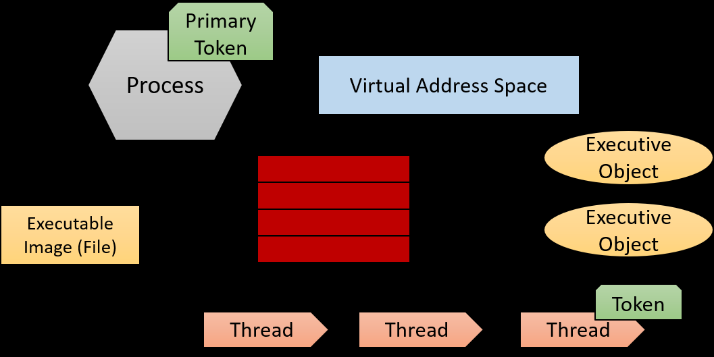
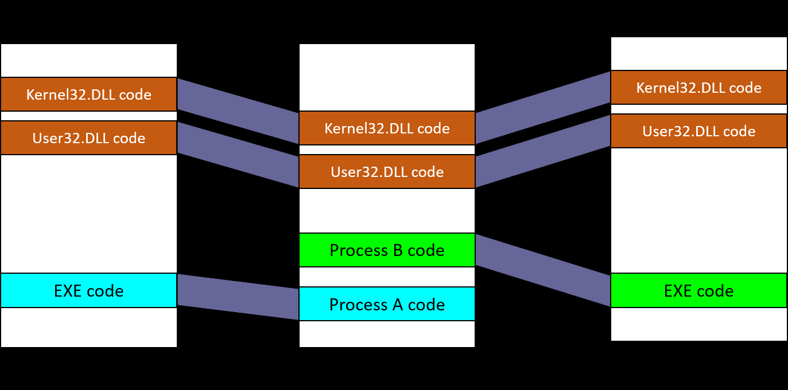
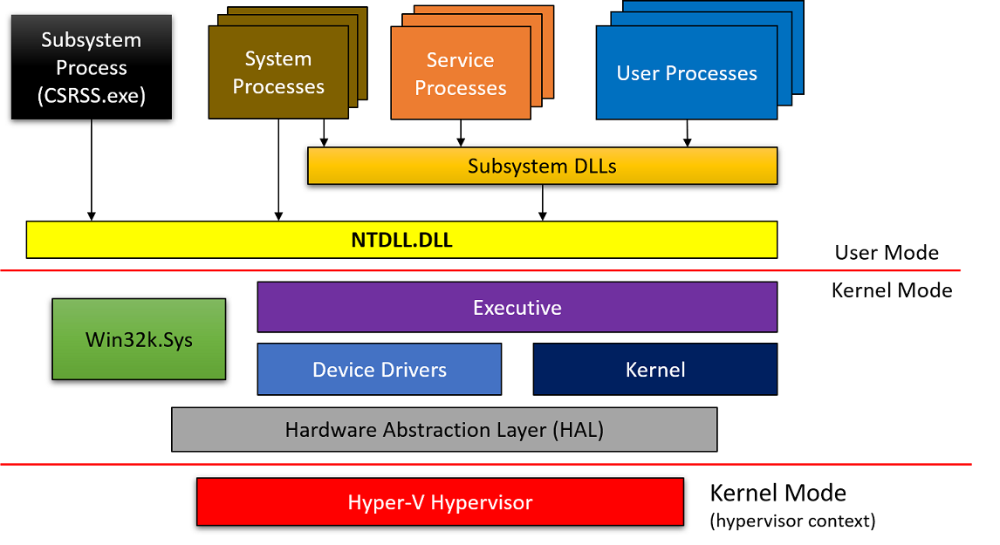
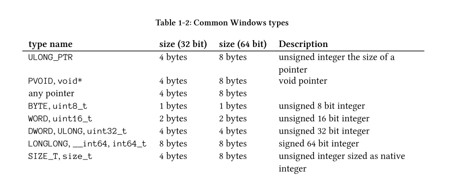
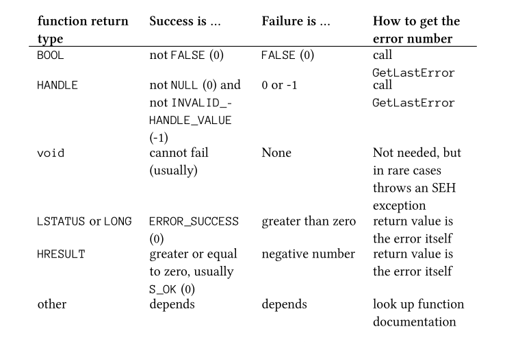
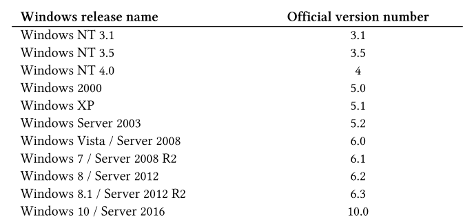
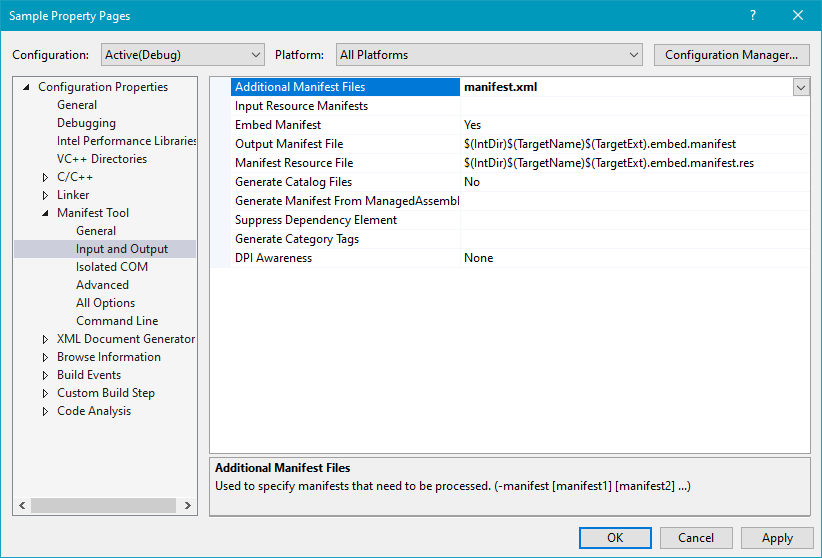
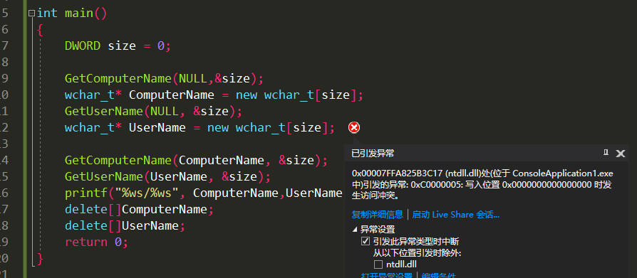

Chapter 1 HelloWorld
SampleCode https://github.com/zodiacon/Win10SysProgBookSamples
Windows Architecture Overview
Process
- A process is a containment and management object that represents a running instance of a program.
- Processes don’t run -- processes manage
- Threads are the ones that execute code and technically run
- Process
- An executable program
- A private virtual address space
- An access token
- A private handle table
- One or more threads of execution

Dynamic Link Libraries
- static linking -> loaded dynamically
- dynamic linking -> explicitly requested
Windows DLLs stored in the System32 directory.

Virtual Memory
- the executable image and NtDll.Dll are normally the first to be mapped
- other processes cannot access it directly
- the first 64KB of address cannot be allocated
Threads
- Current access mode, either user or kernel.
- Execution context, including processor registers.
- A stack , used for local variable allocations and call management.
- Thread Local Storage (TLS) array, which provides a way to store thread-private data with uniform access semantics.
- Base priority and a current (dynamic) priority.
- Processor affinity, indicating on which processors the thread is allowed to run on.
- 三种状态
- Running - currently executing code on a (logical) processor.
- Ready - waiting to be scheduled for execution （ all relevant processors are busy or unavailable.）
- Waiting - waiting for some event to occur before proceeding.
General System Architecture
- Technically, starting from Windows 8.1, there is only a single subsystem - the Windows Subsystem.
- Device Drivers ： Device drivers are loadable kernel modules
Windows Application Development
- Windows API
- Component Object Model (COM) technology : COM API
扩展的组件
- Microsoft Foundation Classes (MFC) （Windows UI)
- Active Template Library (ATL) a C++ template-based library geared towards building COM servers and clients.
- Windows Template Library* (WTL) an extension to ATL, 加入了UI
- .NET - a framework and a runtime (Common Language Runtime - CLR) that provide a host of services
- Windows Runtime (WinRT) -

working with strings
Strings/Char in Classic C:
- Chars : 8 bit Ascii
- Strings are just pointers to characters that end with a zero
Strings/Char in Windows API:
Chars : multiple character sets from many languages -- Unicode
Unicode: utf --- Unicode Transformation Format.
- UTF-8 : 用单字节表示ascii,多字节表示汉字等别的字符。每一个字符可能是1-4字节。如果英文单词比较多用utf-8表示比较好。
- utf-16: 通常使用两个字节表示一个字符。少数字符如汉语或日语的一些使用4字节。
- utf-32 : 每一个字符都使用4个字节。
编程优先考虑使用utf-16
- windows内核使用的是utf-16
- Windows api 兼容utf-8和utf-16 (历史原因)
以具体函数举例
CreateMutex、CreateMutex只是一个宏，具体可被定义为CreateMutexA和CreateMutexW函数原型
HANDLE CreateMutex( _In_opt_ LPSECURITY_ATTRIBUTES lpMutexAttributes, _In_ BOOL bInitialOwner, _In_opt_ LPCTSTR lpName);_In_opt_ : Syntax Annotation Language 用来标记元数据。编译器会完全忽略但是静态分析器会用到。
LPCTSTR ：L=Long P=Pointer C=Constant STR=String 。 L只在16进制操作系统有意义。现在的指针都是一个size,没有long,short之分
LPCTSTR 类型定义如下, 宏的定义根据UNICODE宏是否定义
typedef LPCSTR LPCTSTR; // const char* (UNICODE not defined) typedef LPCWSTR LPCTSTR; // const wchar_t* (UNICODE defined)- .NET只使用 utf-16
TCHAR
- ascii ：char
- unicode : wchar_t
定义wideChar: 加L
const char name1[] = "Hello"; // 6字节 5+1
const wchar_t name2[] = L"Hello"; // 12个字节 10+2
TEXT宏 ：根据UNICODE宏是否定义来确定一个字符串是一个宽字节字符串还是ASCII
HANDLE hMutex = ::CreateMutex(nullptr, FALSE, TEXT("MyMutex"));
或者使用_T
include <tchar.h>
HANDLE hMutex = ::CreateMutex(nullptr, FALSE, _T("MyMutex"));
Strings in c/c++ Runtime
what is c/c++ Runtime functions : strlen,malloc ...
- ASCII : strlen , strcpy , strcat (str
- UINCODE : wcslen, wcscpy , wcscat (wcs
- 宏定义 : _UNICODE 。
_tcs: _tcslen _tcscpy _tcscat
函数返回值
receiving results in the form of strings . api举例。
- 调用这个函数的代码申请一个（allocate）buffer ，把buffer传递给api, api返回的时候把返回字符copy到这个buffer里面
GetSystemDirectory : The function accepts a string buffer and its size and returns the number of characters written back
size : number of chars
UINT GetSystemDirectory(
_Out_ LPTSTR lpBuffer,
_In_ UINT uSize);
// MAX_PATH is defined in the Windows headers as 260 (standard maximum path in Windows)
WCHAR path[MAX_PATH];
::GetSystemDirectory(path, MAX_PATH);
printf("System directory: %ws\n", path); // %ws
- The second common case is where the client code provides a string pointer only (via its address) and the API itself allocates the memory and places the resulting pointer in the provided variable.
api负责申请和释放内存
e.g. FormatMessageW
DWORD FormatMessageW(
_In_ DWORD dwFlags,
_In_opt_ LPCVOID lpSource,
_In_ DWORD dwMessageId,
_In_ DWORD dwLanguageId,
_When_((dwFlags & FORMAT_MESSAGE_ALLOCATE_BUFFER) != 0, _At_((LPWSTR*)lpBuffer, _Outptr_result_z_))
_When_((dwFlags & FORMAT_MESSAGE_ALLOCATE_BUFFER) == 0, _Out_writes_z_(nSize))
LPWSTR lpBuffer,
_In_ DWORD nSize,
_In_opt_ va_list *Arguments);
lpBuffer传的值取决于dwFlags
- 如果设置 FORMAT_MESSAGE_ALLOCATE_BUFFER ：FormatMessageW 会自动申请和释放空间，lpBuffer只需要传一个指针即可。
- 如果未设置：需要传一个指针并指向一个空间。
safe String Functions
如 strcpy(); 可能就会出现缓冲区溢出的bug. 有增强版的api strcpy_s, wcscat_s etc. 这些api额外有一个参数可以设置目标缓冲区的最大大小。
e.g. (C/C++ Runtime)
WCHAR buffer[32];
wcscpy_s(buffer, argv[1]);
WCHAR* buffer2 = (WCHAR*)malloc(32 * sizeof(WCHAR));
//wcscpy_s(buffer2, argv[1]);
wcscpy_s(buffer2, 32, argv[1]);
// size in characters (not bytes)
free(buffer2);
WindowsApi也有对应的api 在<strsafe.h>
#include <strsafe.h>
StringCchCopy(buffer, _countof(buffer), argv[1]);
StringCchCat(buffer, _countof(buffer), L"cat");
StringCchCopy(buffer2, 32, argv[1]);
StringCchCat(buffer2, 32, L"cat");
“Cch” stands for Count of Characters.
使用 _countof 宏来计算buffer的大小 // sizeof(a)/sizeof(a[0]) 算出char的number
32bit / 64bit
32bit下指针只有4字节，64bit下指针有8字节。所以无法用int表示64位指针的值。int 4字节
可以用INT_PTR
void* p = ...;
INT_PTR value = (INT_PTR)p;
// do something with value
windows类型的扩展:

32位进程可以在64位操作系统上执行：WOW64 (Windows on Windows 64).
_WIN64宏 ：
#ifdef _WIN64
printf("Processor Mask: 0x%016llX\n", si.dwActiveProcessorMask);
#else
printf("Processor Mask: 0x%08X\n", si.dwActiveProcessorMask);
#endif
Coding Conventions
- Windows API都以双冒号
::开头 ： :: CreateFile - 类型名称遵循帕斯卡命名法 SolidBrush ， Book
- WTL 以C开头 （Windows Template Library）
- 私有成员变量 以
_开头 _Book _Size- WTL 以 m_开头
- 函数名使用帕斯卡命名法 每一个单词开头大写。
- WTL : Windows Template Library -> simplify UI-related code.
WIL : Windows Implementation Library : This library contains helpful types for easier working with the Windows API.
Hungarian notation : uses prefixes to make variable names hint at their type. Examples: szName, dwValue. 现在已经废用，但是Windows api里面还有很多。
handling API Errors

BOOL type : 32 bit singed integer.
使用GetLastError API获得当前线程上一次调用api失败的ErrorCode. ErrorCode可以使用FormatMessage API获得具体信息。
BOOL success = ::CallSomeAPIThatReturnsBOOL();
if(!success) {
// error - handle it (just print it in this example)
printf("Error: %d\n", ::GetLastError());
}
LSTATUS/LONG : 32位的整数 success返回0，失败会返回errorcode
HRESULT ：32位整数。 success返回整数，failed返回复数。
自定义ErrorCode
#define MY_ERROR_1 ((1 << 29) | 1)
#define MY_ERROR_2 ((1 << 29) | 2)
BOOL SomeApi1(int32_t, int32_t*);
BOOL SomeApi2(int32_t, int32_t*);
bool DoWork(int32_t value, int32_t* result) {
int32_t result1;
BOOL ok = ::SomeApi1(value, &result1);
if (!ok) {
::SetLastError(MY_ERROR_1);
return false;
}
int32_t result2;
ok = ::SomeApi2(value, &result2);
if (!ok) {
::SetLastError(MY_ERROR_2);
return false;
}
*result = result1 + result2;
return true;
}
第29位设置为1，防止和系统的ErrorCode冲突
GetWindowsVersion
versionCode

API GetVersionEx()
typedef struct _OSVERSIONINFO {
DWORD dwOSVersionInfoSize;
DWORD dwMajorVersion;
DWORD dwMinorVersion;
DWORD dwBuildNumber;
DWORD dwPlatformId;
TCHAR
szCSDVersion[128];
// Maintenance string for PSS usage
} OSVERSIONINFO, * POSVERSIONINFO, * LPOSVERSIONINFO;
BOOL GetVersionEx(
_Inout_ POSVERSIONINFO pVersionInformation);
调用：初始化_OSVERSIONINFO结构体的时候把size初始化一下即可。
OSVERSIONINFO vi = { sizeof(vi) };
::GetVersionEx(&vi);
printf("Version: %d.%d.%d\n", vi.dwMajorVersion, vi.dwMinorVersion, vi.dwBuildNumber);
Windows10下运行是 Version: 6.2.9200 。（保证兼容性）
高版本Windows 在资源文件添加 manifest.xml
<?xml version="1.0" encoding="utf-8"?>
<assembly manifestVersion="1.0" xmlns="urn:schemas-microsoft-com:asm.v1">
<compatibility xmlns="urn:schemas-microsoft-com:compatibility.v1">
<application>
<!-- Windows Vista -->
<!--<supportedOS Id="{e2011457-1546-43c5-a5fe-008deee3d3f0}" />-->
<!-- Windows 7 -->
<!--<supportedOS Id="{35138b9a-5d96-4fbd-8e2d-a2440225f93a}" />-->
<!-- Windows 8 -->
<!--<supportedOS Id="{4a2f28e3-53b9-4441-ba9c-d69d4a4a6e38}" />-->
<!-- Windows 8.1 -->
<!--<supportedOS Id="{1f676c76-80e1-4239-95bb-83d0f6d0da78}" />-->
<!--Windows 10-->
<supportedOS Id="{8e0f7a12-bfb3-4fe8-b9a5-48fd50a15a9a}" />
</application>
</compatibility>
</assembly>
配置项目属性

然后再运行得到的Windows版本就是Version: 10.0.19042
没搞懂。
使用KUSER_SHARED_DATA 结构体获取Windows系统版本 ，在固定的地址处：0x7FFE0000
auto sharedUserData = (BYTE*)0x7FFE0000;
// 自动类型推断，auto的自动类型推断发生在编译期，所以使用auto并不会造成程序运行时效率的降低。
printf("Version: %d.%d.%d\n",
*(ULONG*)(sharedUserData + 0x26c),
// major version offset
*(ULONG*)(sharedUserData + 0x270),
// minor version offset
*(ULONG*)(sharedUserData + 0x260)); // build number offset (Windows 10)
使用<versionhelpers.h>里面预定义的和版本有关的api:
IsWindowsXPOrGreater,IsWindowsXPSP3OrGreater, IsWindows7OrGreater, IsWindows8Point1OrGreater,IsWindows10OrGreater
使用VerifyVersionInfo也可以判断一个系统的版本号是否符合需求。
BOOL VerifyVersionInfo(
_Inout_ POSVERSIONINFOEX pVersionInformation, // 这个结构里保存用户提供的系统版本信息
_In_ DWORD dwTypeMask, // 类型掩码，是由一些宏进行或操作之后的结果
_In_ DWORDLONG dwlConditionMask); // 条件掩码
Exercises
GetNativeSystemInfo() API的使用
#define BUILD_WINDOWS
#include<windows.h>
#include<stdio.h>
int main()
{
SYSTEM_INFO si;
GetNativeSystemInfo(&si);
printf("Number of Processors: %d\n", si.dwNumberOfProcessors);
printf("size of dwPageSize: %d\n", si.dwPageSize);
printf("ProcessorType: %d\n", si.dwNumberOfProcessors);
printf("ProcessorLevel: %d\n", si.wProcessorLevel);
printf("MinimumApplicationAddres: %p\n", si.lpMinimumApplicationAddress);
printf("MaximumApplicationAddress: %p\n", si.lpMaximumApplicationAddress);
return 0;
}
GetComputerName|GetUserName
BOOL GetComputerNameA(
LPSTR lpBuffer, //返回当前电脑名称
LPDWORD nSize //返回名称的size
);
BOOL GetUserNameW(
LPWSTR lpBuffer,
LPDWORD pcbBuffer
);
#define BUILD_WINDOWS
#include<windows.h>
#include<stdio.h>
int main()
{
DWORD size1 = 0;
DWORD size2 = 0;
GetComputerName(NULL,&size1);
wchar_t* ComputerName = new wchar_t[size1];
GetUserName(NULL, &size2);
wchar_t* UserName = new wchar_t[size2];
GetComputerName(ComputerName, &size1);
GetUserName(UserName, &size2);
printf("%ws/%ws", ComputerName,UserName);
delete[]ComputerName;
delete[]UserName;
return 0;
}
或者
#define BUILD_WINDOWS
#include<windows.h>
#include<stdio.h>
int main()
{
DWORD size = 0;
GetComputerName(NULL,&size);
wchar_t* ComputerName = new wchar_t[size];
size = 0;
GetUserName(NULL, &size);
wchar_t* UserName = new wchar_t[size];
GetComputerName(ComputerName, &size);
GetUserName(UserName, &size);
printf("%ws/%ws", ComputerName,UserName);
delete[]ComputerName;
delete[]UserName;
return 0;
}

GetWindowsDirectory
GetWindowsDirectoryA function (sysinfoapi.h) - Win32 apps | Microsoft Docs
UINT GetWindowsDirectoryA(
LPSTR lpBuffer,
UINT uSize
);
#define BUILD_WINDOWS
#include<windows.h>
#include<stdio.h>
int main()
{
wchar_t Directory[MAX_PATH];
GetWindowsDirectory(Directory, MAX_PATH);
printf("%ws", Directory);
return 0;
}